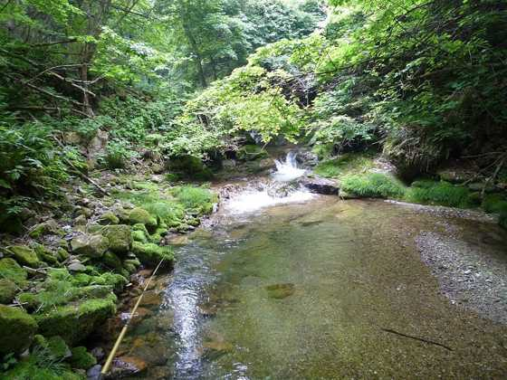
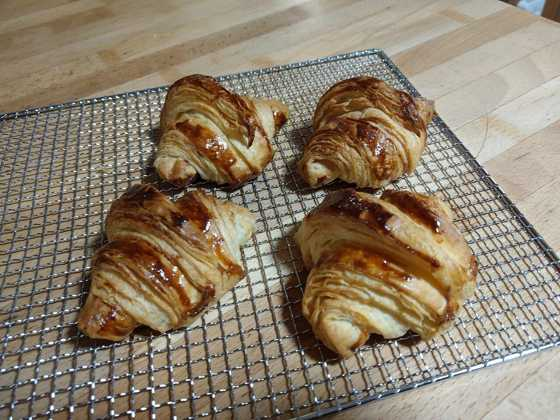
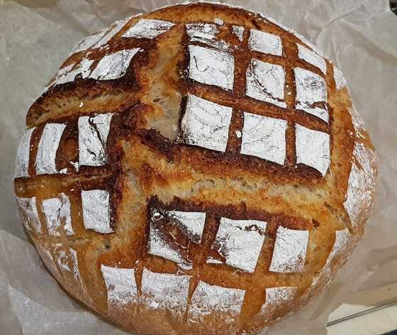

香川県東かがわ市町田
「Forest path」 Zed Can77 / CC0 1.0 creativecommons.orgベーカリーなないろヒュッテ
山のぼりの途中でほっと息をつく山小屋のように、焼きたてのパンで迎えるお店。
山のぼりの途中でほっと息をつく山小屋のように、焼きたてのパンで迎えるお店。
ベーカリーなないろヒュッテは、2025年6月に東かがわ市町田で開店したパン屋さんです。登山サークルで出会い、全国の山を一緒に歩いてきたご夫婦が、東かがわへ移住して開いたと紹介されています。
店名の「ヒュッテ」は山小屋のこと。ご夫婦の共通の趣味が登山であることから名付けられたと紹介されています。店内には登った山のバッジを集めた「バッジ板」があるそうです。
ご主人はパン職人として関東の大手ベーカリーで経験を積み、独立にあたって四国での開業を目指されたとのこと。海も山も近い、静かな東かがわの環境が気に入っているそうです。
「なないろ」の意味は確認できていません。ここでは断定せず、載せていません。
 「Sunrise in a wheat field near Cambridge, UK」 sagesolar / CC BY 2.0 creativecommons.org
「Sunrise in a wheat field near Cambridge, UK」 sagesolar / CC BY 2.0 creativecommons.org国産小麦を中心に、食パンや惣菜パン、菓子パンなど約30種類のパンが並ぶと紹介されています。以下の写真はいずれもイメージです。
山の空気と、麦の畑と、窯の火。そんな連想から、このページは落ち着いた森の緑と、焼き色のような赤茶でまとめました(制作側のイメージです)。

「Mountain Stream」 Fumihiko Ueno / CC BY 3.0 creativecommons.org 「Wheat stalks」 Quer / CC0 1.0 creativecommons.org
「Wheat stalks」 Quer / CC0 1.0 creativecommons.org 「Loaves of Bread」 Clark Young / CC0 1.0 creativecommons.org
「Loaves of Bread」 Clark Young / CC0 1.0 creativecommons.org 「Nach dem Einschießen des Brotes」 Wald1siedel / CC BY-SA 3.0 creativecommons.org
「Nach dem Einschießen des Brotes」 Wald1siedel / CC BY-SA 3.0 creativecommons.org確認できた情報の範囲でご紹介します。実際の品ぞろえ・価格は、Instagramなどでご確認ください。
営業日時(出典の記載): 木・金・土・日 9:00〜16:00(売り切れ次第終了)、月・火・水は定休。変更される場合があります。電話番号: 準備中

「Croissant hk DIY」 SUBARU sti 2020 / CC BY-SA 4.0 creativecommons.org 「Basket of rolls」 Daniel Sone / パブリックドメイン creativecommons.org
「Basket of rolls」 Daniel Sone / パブリックドメイン creativecommons.org 「Tin Loaf - one slash in the crust」 Mike Finn / CC BY 2.0 creativecommons.org
「Tin Loaf - one slash in the crust」 Mike Finn / CC BY 2.0 creativecommons.org 「Whole Wheat Bread 01」 Rebecca Siegel / CC BY 2.0 creativecommons.org
「Whole Wheat Bread 01」 Rebecca Siegel / CC BY 2.0 creativecommons.org 「French bread」 Marianne Casamance / CC BY-SA 4.0 creativecommons.org
「French bread」 Marianne Casamance / CC BY-SA 4.0 creativecommons.org 「Bread from the wood-fired oven (Spain)」 Juan Emilio Prades Bel / CC BY 4.0 creativecommons.org
「Bread from the wood-fired oven (Spain)」 Juan Emilio Prades Bel / CC BY 4.0 creativecommons.org
「sourdough」 Fæ / CC BY-SA 4.0 creativecommons.org以下は制作側が創作したイメージ例で、実在のお客さまの声ではありません。
朝のうちに立ち寄って、焼きたてのクロワッサンを買いました。バターの香りが車の中まで広がりました。
山のお話がお店の雰囲気に出ていて、小さな山小屋に寄ったような気持ちになりました。
食パンをお土産に。やわらかくて、家に帰ってからもう一度ゆっくり楽しめました。
掲載写真はフリー素材のイメージ写真で、店舗の実際の商品・店内・外観ではありません。日本国内の他地域や海外で撮影されたもの、撮影地が不明なものを含みます。各写真の下にクレジットを記載しています。